00读前一分钟 · 全文脉络（做完题再看也行）
①段 输家和意外的赢家：老好莱坞自从在流媒体上跟 Netflix 正面开打，就一直赚不到钱——Disney+、Peacock、Paramount+ 每年亏几十亿美元，大家担心流媒体永远赶不上当年有线电视那么赚钱。But，流媒体时代却便宜了一群意想不到的赢家：盗版者用软件几秒钟就从正版平台上扒下一部片子，挂到自己的非法平台上，靠广告和订阅一年进账约 20 亿美元（31 题：正版平台面临真实威胁）。
②段 为什么这么赚：不用花一分钱拍片，非法流媒体网站的利润率接近 90%——这是美国电影协会（MPA）说的。MPA 是代表好莱坞制片厂的行业组织，正在严打近年冒出来的几千个非法平台（⚠️ 这句身份介绍是 33 题的钥匙）。
③段 一串损失数字：起初，Netflix 这类正版在线业务的兴起其实帮忙遏制了数字盗版——那时的盗版主要靠文件上传（32 题）。But now，非法流媒体加上文件共享，让美国经济每年损失约 300 亿美元收入、约 25 万个工作岗位；全球损失每年约 710 亿美元。
④段 反制者登场：MPA 首席执行官里夫金说，偷电影、开盗版站的不是夫妻小店，「这是有组织犯罪」。他 2017 年加入 MPA，此前五年（2012 年），MPA 没能在好莱坞和硅谷之间谈拢共识、推动国会通过反盗版立法（33 题）。2017 年，MPA 组建了「创意与娱乐联盟」（ACE）——一支约 100 名侦探的执法队，满世界帮地方当局抓盗版者。
⑤段 战果：ACE 说，北美非法流媒体服务从 2018 年的 1,400 多家降到了 126 家，部分得益于 MPA 支持的一部 2020 年联邦法律——它把大规模播放盗版内容定为重罪。
⑥段 前景：还早：咨询公司 Parks Associates 预测，美国正版流媒体自 2022 年以来被盗版造成的累计损失，未来两年将达 1,130 亿美元。分析师霍利说：虽然有人乐观，觉得新的反制措施和最佳实践可能让盗版到 2027 年不再增长，但它什么时候开始下降，各方毫无共识（34 题）。
📌 一句话主旨：盗版流媒体是流媒体时代的意外赢家，给好莱坞和整个经济造成了巨大损失；打击有进展，但短期内不会好转。
📌 结构套路：问题（①② 谁赢谁输、为什么赚）→ 数字（③ 损失多大）→ 对策（④⑤ MPA、ACE、立法）→ 前景（⑥ 还会更糟一阵）——标准的问题报道，作者几乎不发表议论，靠数字和引语推进。五题完全顺序：31①、32③、33④、34⑥、35 全文。
📌 本篇最值钱的两条规律：① 先给机构贴身份标签——②段一句同位语交代了 MPA 是「代表好莱坞制片厂的行业组织」，到④段「没能在好莱坞和硅谷之间促成共识」，三方其实只有两方：MPA 就是好莱坞的嘴，谈不拢 ＝ 硅谷不配合 ⟹ 33A（R117）。② 趋势词分三档：涨 → 平（plateau）→ 降（decline）。霍利的让步从句里，乐观派最多只敢说到「平」；主句说「降」何时开始没人知道 ⟹ 近期不会减少（34C）；A 说「遏制不住」，把「平」读成了「涨」；B 说「压垮正版」，又往「涨」那头再拔一级 ⟹ 新立 R322。
📌 和 2025 T1、T2 比一比：T1 研究报道、T2 第一人称评论、T3 数字型问题报道。三篇的作者声音一篇比一篇弱：T2 作者全程表态，T3 作者一个评价词都没给，态度全藏在材料的排法里——开头是亏损、中间是损失、结尾是更大的损失，所以 35 题的主旨只能是「经济危害」（D），不是某一段里的「犯罪性质」（B）。
📌 结构套路：问题（①② 谁赢谁输、为什么赚）→ 数字（③ 损失多大）→ 对策（④⑤ MPA、ACE、立法）→ 前景（⑥ 还会更糟一阵）——标准的问题报道，作者几乎不发表议论，靠数字和引语推进。五题完全顺序：31①、32③、33④、34⑥、35 全文。
📌 本篇最值钱的两条规律：① 先给机构贴身份标签——②段一句同位语交代了 MPA 是「代表好莱坞制片厂的行业组织」，到④段「没能在好莱坞和硅谷之间促成共识」，三方其实只有两方：MPA 就是好莱坞的嘴，谈不拢 ＝ 硅谷不配合 ⟹ 33A（R117）。② 趋势词分三档：涨 → 平（plateau）→ 降（decline）。霍利的让步从句里，乐观派最多只敢说到「平」；主句说「降」何时开始没人知道 ⟹ 近期不会减少（34C）；A 说「遏制不住」，把「平」读成了「涨」；B 说「压垮正版」，又往「涨」那头再拔一级 ⟹ 新立 R322。
📌 和 2025 T1、T2 比一比：T1 研究报道、T2 第一人称评论、T3 数字型问题报道。三篇的作者声音一篇比一篇弱：T2 作者全程表态，T3 作者一个评价词都没给，态度全藏在材料的排法里——开头是亏损、中间是损失、结尾是更大的损失，所以 35 题的主旨只能是「经济危害」（D），不是某一段里的「犯罪性质」（B）。
🗞 背景（WebSearch 核过，只帮读、不替原文纠错）：原文是彭博《商业周刊》记者 Thomas Buckley 的报道（彭博法律频道转载题作 Video Streaming Pirates Are …）。④❸ 的「五年前」就是 2012 年的 SOPA／PIPA：两部好莱坞力推的反网络盗版法案，2012 年 1 月 18 日维基百科、谷歌等发起 24 小时「断网」抗议，议员纷纷撤回联署，法案搁浅；时任 MPAA 主席多德事后请白宫出面撮合好莱坞与硅谷，也没成——反对方正是硅谷，这就是 33A「被硅谷拒绝合作」的现实底色。⑤段的 2020 年联邦法律是 Protecting Lawful Streaming Act（《保护合法流媒体法》）：2020 年 12 月由参议员蒂利斯提出、并入年底拨款法签署，把商业性的大规模非法流媒体从轻罪升为重罪（最高 10 年），只针对运营者、不针对观众。里夫金 2017 年起任 MPA 主席兼 CEO，同时是 ACE 主席。
01原文精读
🟡 黄色高亮 = 重难点词/短语，点击右侧出卡片 ｜ 蓝色虚线 = 长难句，点击跳到精析 ｜ 每段「意」= 段落意译 ｜ 选中任意其他单词浮出「查有道」 ｜ 原文由你的浏览器从原卷识别成文字（首次约 3 秒，之后秒开）；「原卷对照」可逐句看扫描原图、改识别错字
①
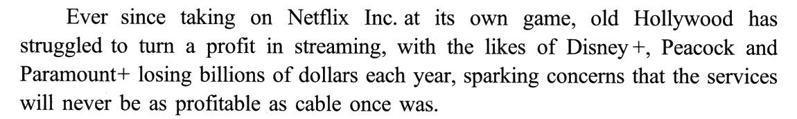
🟡 taking on · at its own game · turn a profit · streaming · the likes of · sparking · profitable · cable
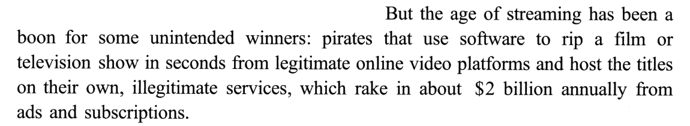
🟡 boon · unintended · pirates · rip · legitimate · platforms · host · titles · illegitimate · rake in · annually · subscriptions
①段意：自从在流媒体这块地盘上跟 Netflix 正面较量以来，老牌好莱坞一直很难在流媒体上赚到钱：Disney+、Peacock、Paramount+ 之类的平台每年亏损数十亿美元，人们担心这些服务永远不会像当年的有线电视那样赚钱。然而，流媒体时代却成了一些意想不到的赢家的福音：盗版者用软件几秒钟就能从正版在线视频平台上扒下一部电影或一档电视节目，再挂到他们自己的非法平台上，靠广告和订阅每年进账约 20 亿美元。
②
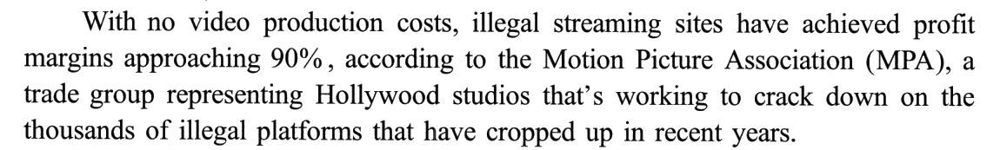
🟡 production · profit margins · approaching · trade group · representing · crack down on · cropped up
②段意：美国电影协会（MPA）称，由于没有任何视频制作成本，非法流媒体网站的利润率已接近 90%。MPA 是代表好莱坞各制片厂的行业组织，正致力于严厉打击近年来冒出来的成千上万个非法平台。
③
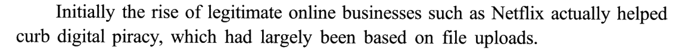
🟡 Initially · curb · piracy · largely · uploads
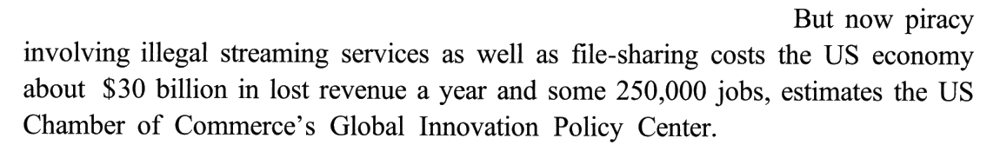
🟡 involving · file-sharing · revenue · estimates · Chamber
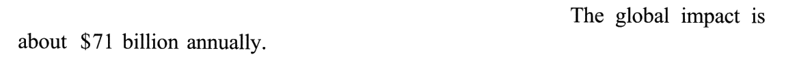
🟡 impact
③段意：起初，像 Netflix 这样的正版在线业务的兴起，其实帮助遏制了数字盗版——那时的盗版主要靠文件上传。但据美国商会全球创新政策中心估计，如今涉及非法流媒体服务和文件共享的盗版，每年让美国经济损失约 300 亿美元收入和约 25 万个工作岗位。全球范围的损失每年约 710 亿美元。
④
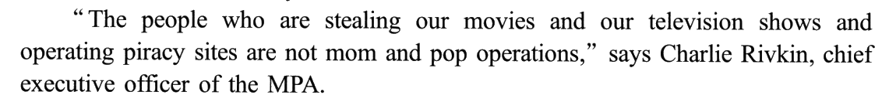
🟡 stealing · mom and pop operations · chief executive officer
🟡 organized crime
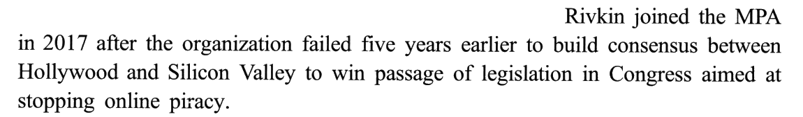
🟡 consensus · passage · legislation · aimed at
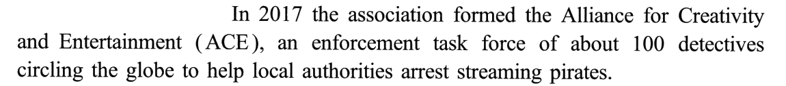
🟡 Alliance · enforcement · task force · detectives · circling · authorities · arrest
④段意：「偷我们的电影和电视节目、经营盗版网站的人，可不是什么夫妻小店，」MPA 首席执行官查理·里夫金说，「这是有组织犯罪。」里夫金 2017 年加入 MPA，在那之前五年，该组织没能在好莱坞和硅谷之间达成共识，从而推动国会通过一项旨在制止网络盗版的立法。2017 年，该协会成立了「创意与娱乐联盟」（ACE）——一支由约 100 名侦探组成的执法特遣队，奔走全球，协助各地当局抓捕流媒体盗版者。
⑤
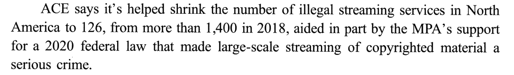
🟡 shrink · aided in part by · federal · large-scale · copyrighted
⑤段意：ACE 说，它已帮助把北美的非法流媒体服务从 2018 年的 1,400 多家减少到 126 家；这在一定程度上也得益于 MPA 对一部 2020 年联邦法律的支持——该法把大规模播放受版权保护的内容定为重罪。
⑥
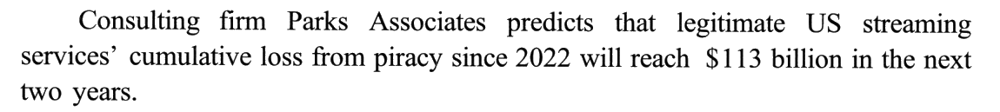
🟡 Consulting · predicts · cumulative
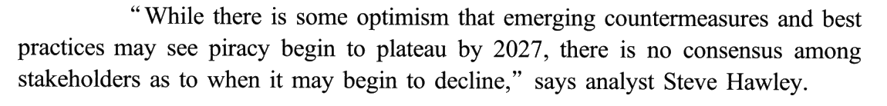
🟡 optimism · emerging · countermeasures · best practices · plateau · stakeholders · as to · decline
⑥段意：咨询公司 Parks Associates 预测，美国正版流媒体服务自 2022 年以来因盗版遭受的累计损失，将在未来两年达到 1,130 亿美元。「虽然有人乐观地认为，新出现的反制措施和最佳实践可能让盗版到 2027 年趋于平稳，但对于盗版何时会开始减少，各利益相关方并没有共识，」分析师史蒂夫·霍利说。
02题目与解析（点选项即判 · 再看解析）
事实细节31. According to Paragraph 1, legitimate streaming services ______.
[A] have drawn lessons from Hollywood.
[B] have surpassed cable in revenue.
[C] are unpopular with advertisers.
[D] are confronted with a real threat.
答案 D 题干的 legitimate 是个对立信号：说「正版」，是因为后面有「盗版」。①段两句正好一输一赢：❶ 老好莱坞的流媒体（Disney+ 等）struggled to turn a profit、每年亏几十亿；❷ But 一转——流媒体时代成了 a boon for some unintended winners，赢家就是从 legitimate online video platforms 上扒片子、挂到 illegitimate services 上一年赚 20 亿的盗版者。正版这边在亏，盗版那边拿正版的内容去赚 ⟹ 正版平台面临真实的威胁 ⟹ D。
干扰项：A 从❶ taking on Netflix Inc. at its own game 编出「向好莱坞学习」——可题干的「正版流媒体」指的恰恰就是好莱坞自家的 Disney+、Peacock 们，自己向自己学什么？而且「吸取了经验」暗示混得不错，和「年年巨亏」正相反。B 与❶ 正面冲突：大家担心的正是它们 will never be as profitable as cable once was。C 把❶ 的 profitable 和❷ 的 ads 拼起来，脑补出「广告商不喜欢它们」——文中广告是盗版站的收入来源，和广告商对正版平台的态度毫无关系。
技巧：首段题若首段是「❶ 现状 ＋ ❷ But 转出新角色」，答案总在转折之后的那个新角色对题干对象意味着什么。这里 unintended winners 一出场，题干里的 legitimate 就成了「被抢了饭碗的一方」。
📕 与书解析的商榷：无分歧。书的技巧总结也是先抓❷ 的 legitimate 与 pirates 的对立，再用冒号后的解释坐实 pirates ＝ unintended winners。
干扰项：A 从❶ taking on Netflix Inc. at its own game 编出「向好莱坞学习」——可题干的「正版流媒体」指的恰恰就是好莱坞自家的 Disney+、Peacock 们，自己向自己学什么？而且「吸取了经验」暗示混得不错，和「年年巨亏」正相反。B 与❶ 正面冲突：大家担心的正是它们 will never be as profitable as cable once was。C 把❶ 的 profitable 和❷ 的 ads 拼起来，脑补出「广告商不喜欢它们」——文中广告是盗版站的收入来源，和广告商对正版平台的态度毫无关系。
技巧：首段题若首段是「❶ 现状 ＋ ❷ But 转出新角色」，答案总在转折之后的那个新角色对题干对象意味着什么。这里 unintended winners 一出场，题干里的 legitimate 就成了「被抢了饭碗的一方」。
📕 与书解析的商榷：无分歧。书的技巧总结也是先抓❷ 的 legitimate 与 pirates 的对立，再用冒号后的解释坐实 pirates ＝ unintended winners。
事实细节32. It can be learned that streamers like Netflix ______.
[A] played a part in the fight against illegal file-sharing.
[B] reaped benefits from the war with digital pirates.
[C] promised to become big job creators in the US.
[D] used to collaborate with file-uploading platforms.
答案 A Netflix 再出现是在③❶：正版在线业务的兴起 actually helped curb digital piracy。选项里没有 curb digital piracy 的原词，要靠后面的定语从句换算：which had largely been based on file uploads——当年的数字盗版主要就是「上传文件」，即文件共享。于是：helped ＝ played a part in，curb ＝ the fight against，（当年的）digital piracy ＝ illegal file-sharing ⟹ A。
干扰项：B 把「帮着打击盗版」改成了「从和盗版的斗争中获益」——原文只说起了作用，没说谁得了好处；③❷ 起反而在讲如今大家都损失惨重。C 从③❷ 的 250,000 jobs 反推：盗版毁掉工作岗位，不等于正版平台承诺创造岗位，promised 更是无中生有。D 把③❶ 的 file uploads 和③❷ 的 as well as file-sharing 拼起来，编出「过去和文件上传平台合作」——方向完全反了：Netflix 是那些平台的对手，上传平台本身就是盗版。
技巧：原文给的是「上位词」（digital piracy），选项给的是「下位词」（file-sharing）时，回原文找那个限定它的从句——作者往往自己就交代了「当时的 X 主要是 Y」。注意时态：had largely been 是过去完成，说的是「当时」，和 now 的流媒体盗版分开 ⟹ 选项用一般过去时 played 正对上。
📕 与书解析的商榷：无分歧。书在「选项定位」里把原文印成了 illegal fire-sharing，是排印笔误（原文与选项都是 file-sharing）。
干扰项：B 把「帮着打击盗版」改成了「从和盗版的斗争中获益」——原文只说起了作用，没说谁得了好处；③❷ 起反而在讲如今大家都损失惨重。C 从③❷ 的 250,000 jobs 反推：盗版毁掉工作岗位，不等于正版平台承诺创造岗位，promised 更是无中生有。D 把③❶ 的 file uploads 和③❷ 的 as well as file-sharing 拼起来，编出「过去和文件上传平台合作」——方向完全反了：Netflix 是那些平台的对手，上传平台本身就是盗版。
技巧：原文给的是「上位词」（digital piracy），选项给的是「下位词」（file-sharing）时，回原文找那个限定它的从句——作者往往自己就交代了「当时的 X 主要是 Y」。注意时态：had largely been 是过去完成，说的是「当时」，和 now 的流媒体盗版分开 ⟹ 选项用一般过去时 played 正对上。
📕 与书解析的商榷：无分歧。书在「选项定位」里把原文印成了 illegal fire-sharing，是排印笔误（原文与选项都是 file-sharing）。
细节推理33. It can be inferred from Paragraph 4 that the MPA ______.
[A] was denied cooperation by Silicon Valley.
[B] led a national protest against online piracy.
[C] was urged to form an enforcement task force.
[D] failed to win support from local authorities.
答案 A 推理题先把题干对象的身份找出来：②段同位语早就交代了——MPA 是 a trade group representing Hollywood studios，好莱坞的代言人。再看④❸：MPA failed five years earlier to build consensus between Hollywood and Silicon Valley，目的是推动反盗版立法。表面上是三方（MPA、好莱坞、硅谷），实际只有两方：MPA 本来就站在好莱坞那边，它要「在好莱坞和硅谷之间促成共识」，就是去争取硅谷的支持；没成 ⟹ 硅谷没配合 ⟹ A。
干扰项：C 把④❹ 的主动换成了被动：原文是 the association formed ACE（MPA 自己组建的），C 写成「被敦促组建」——主动 ⟹ 被动，是推理题最常见的「改语态」陷阱。D 把④❹ 的 to help local authorities arrest streaming pirates（帮地方当局）反写成「没得到地方当局的支持」；没通过的是国会立法，跟地方当局无关。B 的 national 和 protest 都无据：ACE 的侦探 circling the globe，是全球；做的是执法抓人，不是抗议——protest 是表达不满，MPA 的办法是立法、组队、抓人。
技巧：多方关系的推理题，先在卷边画栏：每个机构住在哪一栏（R117）。只要发现「中间人」其实是某一方的代言人，三方就塌成两方，「X 与 Y 之间谈不拢」就等于「Y 不肯跟 X 合作」。
⚠️ 盲做时犹豫过：A 要推一步（failed to build consensus ⟹ denied cooperation），容易担心「推过头」。可另外三项要么改语态（C）、要么方向反（D）、要么无据（B），排到最后只剩 A；而推的这一步正是②段那句身份介绍给的。
📕 与书解析的商榷：无分歧，书的技巧总结同样是「先明确 MPA 的身份」「三方实为两方」。补一条背景（见 00）：五年前那次失败就是 2012 年的 SOPA／PIPA，反对方正是以谷歌、维基百科为首的硅谷——现实与推理完全吻合。
干扰项：C 把④❹ 的主动换成了被动：原文是 the association formed ACE（MPA 自己组建的），C 写成「被敦促组建」——主动 ⟹ 被动，是推理题最常见的「改语态」陷阱。D 把④❹ 的 to help local authorities arrest streaming pirates（帮地方当局）反写成「没得到地方当局的支持」；没通过的是国会立法，跟地方当局无关。B 的 national 和 protest 都无据：ACE 的侦探 circling the globe，是全球；做的是执法抓人，不是抗议——protest 是表达不满，MPA 的办法是立法、组队、抓人。
技巧：多方关系的推理题，先在卷边画栏：每个机构住在哪一栏（R117）。只要发现「中间人」其实是某一方的代言人，三方就塌成两方，「X 与 Y 之间谈不拢」就等于「Y 不肯跟 X 合作」。
⚠️ 盲做时犹豫过：A 要推一步（failed to build consensus ⟹ denied cooperation），容易担心「推过头」。可另外三项要么改语态（C）、要么方向反（D）、要么无据（B），排到最后只剩 A；而推的这一步正是②段那句身份介绍给的。
📕 与书解析的商榷：无分歧，书的技巧总结同样是「先明确 MPA 的身份」「三方实为两方」。补一条背景（见 00）：五年前那次失败就是 2012 年的 SOPA／PIPA，反对方正是以谷歌、维基百科为首的硅谷——现实与推理完全吻合。
人物观点34. According to Hawley, digital piracy ______.
[A] cannot be checked in spite of new legislation.
[B] will possibly overwhelm legitimate streamers.
[C] is unlikely to diminish in the near future.
[D] has been underestimated by some analysts.
答案 C 霍利的话在⑥❷，While 让步 ＋ 主句：让步从句里乐观派最多只说到 may see piracy begin to plateau by 2027——停止增长、趋于平稳；主句才是霍利的落点：there is no consensus … as to when it may begin to decline——什么时候开始下降，谁也说不准。乐观的最好情况是「到 2027 年不再涨」，「降」更是遥遥无期 ⟹ 短期内不太可能减少 ⟹ C；unlikely 对应原文的不确定语气，in the near future 对应 by 2027 这个近期时间窗。
干扰项：把盗版的走势画成三档——涨 → 平 → 降——四个选项各落在哪一档就一清二楚。A「尽管有新法也遏制不住」：遏制不住 ＝ 一直在涨，可原文的乐观派说的是「会趋平」，主句也只是说「降」的时间没共识，没人说它停不下来——把「何时降不确定」偷换成了「绝不会被控制」，档位错、语气也从委婉变成了绝对。B「可能压垮正版平台」：比「涨」还多拔一级，料来自⑥❶ 的 1,130 亿美元，但那是霍利之外的咨询公司的数字，霍利本人没这么说。D「被一些分析师低估」：霍利并没有反驳乐观派（他承认 there is some optimism），只是说下降的时间没有共识——让步不等于驳斥。
技巧：人物观点题遇到「While A, B」，观点取主句 B（R260）；再把原文的趋势词放上涨—平—降的阶梯：让步里乐观到哪一档、主句不确定的是哪一档，正确项就落在两者之间 ⟹ 新立 R322。
📕 与书解析的商榷：无分歧。书在两处「选项定位」里把原文的 piracy 印成了 privacy（may see privacy begin to …），排印笔误。书说 A、C 的区别是「A 绝对、C 委婉」，再补一个更硬的判据：A 的「遏制不住」与让步从句里的 plateau 冲突——连乐观派都只敢说「趋平」，而「趋平」本身就是被遏制住了增长。
干扰项：把盗版的走势画成三档——涨 → 平 → 降——四个选项各落在哪一档就一清二楚。A「尽管有新法也遏制不住」：遏制不住 ＝ 一直在涨，可原文的乐观派说的是「会趋平」，主句也只是说「降」的时间没共识，没人说它停不下来——把「何时降不确定」偷换成了「绝不会被控制」，档位错、语气也从委婉变成了绝对。B「可能压垮正版平台」：比「涨」还多拔一级，料来自⑥❶ 的 1,130 亿美元，但那是霍利之外的咨询公司的数字，霍利本人没这么说。D「被一些分析师低估」：霍利并没有反驳乐观派（他承认 there is some optimism），只是说下降的时间没有共识——让步不等于驳斥。
技巧：人物观点题遇到「While A, B」，观点取主句 B（R260）；再把原文的趋势词放上涨—平—降的阶梯：让步里乐观到哪一档、主句不确定的是哪一档，正确项就落在两者之间 ⟹ 新立 R322。
📕 与书解析的商榷：无分歧。书在两处「选项定位」里把原文的 piracy 印成了 privacy（may see privacy begin to …），排印笔误。书说 A、C 的区别是「A 绝对、C 委婉」，再补一个更硬的判据：A 的「遏制不住」与让步从句里的 plateau 冲突——连乐观派都只敢说「趋平」，而「趋平」本身就是被遏制住了增长。
文章主旨35. Which of the following is emphasized in the text?
[A] The need to coordinate anti-piracy action.
[B] The criminal nature of copyright violation.
[C] The prospect of eliminating online piracy.
[D] The economic harm from illegal streaming.
答案 D 「emphasized in the text」问的是贯穿全文的东西。把全文的数字串起来：① 正版每年亏数十亿、盗版一年赚 20 亿 → ② 盗版利润率近 90% → ③ 美国每年损失 300 亿美元收入和 25 万个岗位、全球 710 亿 → ⑥ 两年内累计损失将达 1,130 亿。六段里有四段在报损失账，开头、中间、结尾都是钱 ⟹ 非法流媒体造成的经济损害 ⟹ D。
干扰项：B 是最像的一项：④❷ This is organized crime、⑤ a serious crime，「犯罪」确实出现了两次。但这两句都在对策部分，作用是说明问题有多严峻、为反制行动铺垫；它们只占④⑤两段，而经济损失的数字从①一直排到⑥。A 拿④❸ 的 consensus 和⑥❷ 的 no consensus 拼出「需要协调」——两个 consensus 一个讲 2012 年的立法、一个讲盗版何时下降，都不是在呼吁协调；作者也从没写过「应该」。C 与⑥❷ 正相反：连「下降」都说不准，何谈消灭（eliminating）？
技巧：主旨题干扰项多半是局部信息：两项都在文中出现过、甚至出现过两次时，比的是覆盖段数——哪一项从首段排到末段，哪一项才是 emphasized。数字型报道尤其如此：把每段的数字列成一张单子，给整张单子起个上位名（R191）。
⚠️ 盲做时 B／D 犹豫过：B 的 organized crime 是里夫金的原话、语气最重，读完④段容易被它带走。判据就是覆盖度：「犯罪」只活在④⑤，「钱」活在①②③⑥。
📕 与书解析的商榷：无分歧。书在 A 项「选项定位」里把原文的 stakeholders（利益相关方）印成了 shareholders（股东），C 项又一次把 piracy 印成 privacy，都是排印笔误。
干扰项：B 是最像的一项：④❷ This is organized crime、⑤ a serious crime，「犯罪」确实出现了两次。但这两句都在对策部分，作用是说明问题有多严峻、为反制行动铺垫；它们只占④⑤两段，而经济损失的数字从①一直排到⑥。A 拿④❸ 的 consensus 和⑥❷ 的 no consensus 拼出「需要协调」——两个 consensus 一个讲 2012 年的立法、一个讲盗版何时下降，都不是在呼吁协调；作者也从没写过「应该」。C 与⑥❷ 正相反：连「下降」都说不准，何谈消灭（eliminating）？
技巧：主旨题干扰项多半是局部信息：两项都在文中出现过、甚至出现过两次时，比的是覆盖段数——哪一项从首段排到末段，哪一项才是 emphasized。数字型报道尤其如此：把每段的数字列成一张单子，给整张单子起个上位名（R191）。
⚠️ 盲做时 B／D 犹豫过：B 的 organized crime 是里夫金的原话、语气最重，读完④段容易被它带走。判据就是覆盖度：「犯罪」只活在④⑤，「钱」活在①②③⑥。
📕 与书解析的商榷：无分歧。书在 A 项「选项定位」里把原文的 stakeholders（利益相关方）印成了 shareholders（股东），C 项又一次把 piracy 印成 privacy，都是排印笔误。
03长难句精析（正文蓝色虚线句）
s1（①❶）
- 句首
Ever since taking on Netflix Inc. at its own game：ever since ＋ 动名词作时间状语，逻辑主语是主句的 old Hollywood；主句用现在完成时 has struggled，「从那时起一直……」。 take on sb at its own game：在对方擅长的领域跟它较量——流媒体是 Netflix 的老本行，好莱坞跑去它的主场开打。- 主干：
old Hollywood has struggled to turn a profit in streaming。 with the likes of Disney+ … losing billions：with 复合结构（with ＋ 宾语 ＋ 现在分词），给主干补「具体表现」。- 句尾
sparking concerns that …：现在分词作结果状语（亏钱 ⟹ 引发担忧）；that 引导 concerns 的同位语从句，内容是 never be as profitable as cable once was（as … as 比较，once was 指「当年」）。
意：自从在流媒体这块地盘上跟 Netflix 正面较量以来，老牌好莱坞一直很难在流媒体上赚到钱：Disney+、Peacock、Paramount+ 之类的平台每年亏损数十亿美元，人们担心这些服务永远不会像当年的有线电视那样赚钱。
s2（①❷）
- 主干：
the age of streaming has been a boon for some unintended winners，冒号后解释 winners 是谁。 - 冒号后的核心词
pirates带一个 that 定语从句，从句里一个主语带两个并列谓语：use software to ripa film or television show … 和host the titleson their own, illegitimate services。 - 句尾
which rake in about $2 billion annually：非限制性定语从句，先行词是 services（复数，所以 rake 不加 s）。 - ⭐ legitimate ↔ illegitimate 在一句里各出现一次：从「正版」平台扒、挂到「非法」平台上——31 题题干的 legitimate 就是冲这组对立来的。
意：然而，流媒体时代却成了一些意想不到的赢家的福音：盗版者用软件几秒钟就能从正版在线视频平台上扒下一部电影或一档电视节目，再挂到他们自己的非法平台上，靠广告和订阅每年进账约 20 亿美元。
s3（②）
- 句首
With no video production costs：with 短语作原因状语——「因为不用花拍片的钱」。 - 主干：
illegal streaming sites have achieved profit margins，approaching 90%是现在分词作后置定语。 according to the Motion Picture Association (MPA)后紧跟同位语a trade group representing Hollywood studios，studios 后又挂一个 that’s working to … 的定语从句。- ⭐ 这条同位语是全文唯一一处交代 MPA 身份的地方：代表好莱坞。读的时候顺手在卷边写「MPA ＝ 好莱坞」——33 题就靠它。
- 句尾
platforms that have cropped up in recent years：crop up 「突然冒出」，配现在完成时。
意：美国电影协会（MPA）称，由于没有任何视频制作成本，非法流媒体网站的利润率已接近 90%。MPA 是代表好莱坞各制片厂的行业组织，正致力于严厉打击近年来冒出来的成千上万个非法平台。
s4（③❶）
- 主干：
the rise of legitimate online businesses … actually helped curb digital piracy——主语是 the rise（兴起），不是 businesses；help do 省略 to。 actually：「其实、出人意料地」——提示这件事和读者的预期相反（正版兴起，本该和盗版无关，结果反而压住了盗版）。- 句尾
which had largely been based on file uploads：非限制性定语从句修饰 digital piracy，过去完成时交代「那时的盗版主要靠文件上传」——这一笔把 digital piracy 换算成了 file-sharing ⟹ 32 题 A。 - Initially（❶）与 But now（❷）首尾对照：当时帮了忙，如今损失惨重。
意：起初，像 Netflix 这样的正版在线业务的兴起，其实帮助遏制了数字盗版——那时的盗版主要靠文件上传。
s5（③❷）
- 主语很长：
piracy involving illegal streaming services as well as file-sharing——involving 现在分词作后置定语，as well as 连接两个宾语（流媒体 ＋ 文件共享）。 - 谓语
costs：cost sb sth「使某人损失某物」，双宾语——the US economy 是人，后面两个是物：about $30 billion in lost revenue a year 和 some 250,000 jobs。 - 句尾
estimates the US Chamber of Commerce’s …：引述倒装（主谓倒装的信息来源），等于「据……估计」。新闻里 says X、estimates X 放句尾很常见。 - ⚠️ as well as 是「和」，不是「与……合作」——32 题 D 就借它造干扰。
意：但据美国商会全球创新政策中心估计，如今涉及非法流媒体服务和文件共享的盗版，每年让美国经济损失约 300 亿美元收入和约 25 万个工作岗位。
s6（④❸）
- 主干：
Rivkin joined the MPA in 2017，after 引导时间状语从句。 - after 从句：
the organization failed five years earlier to build consensus between A and B——five years earlier 插在 failed 和不定式之间，是「在 2017 年之前五年」＝ 2012 年。 - 第二个不定式
to win passage of legislation in Congress表目的：促成共识，是为了推动国会通过立法；legislation 后接过去分词短语 aimed at stopping online piracy 作定语。 - ⭐ 推理链：MPA ＝ 好莱坞（②）⟹「在好莱坞和硅谷之间促成共识」＝ 争取硅谷 ⟹ 失败 ＝ 硅谷没配合 ⟹ 33 题 A。
意：里夫金 2017 年加入 MPA，在那之前五年，该组织没能在好莱坞和硅谷之间达成共识，从而推动国会通过一项旨在制止网络盗版的立法。
s7（④❹）
- 主干：
the association formed the Alliance for Creativity and Entertainment (ACE)——主动语态，是 MPA 自己组建的（33 题 C 改成被动 was urged）。 - 逗号后
an enforcement task force of about 100 detectives是 ACE 的同位语。 - detectives 后接现在分词短语
circling the globe（满世界跑），再接不定式to help local authorities arrest streaming pirates表目的；help sb do。 - ⚠️ local authorities 是被帮助的对象，33 题 D 把它反写成「不支持 MPA」的一方；circling the globe 是全球，33 题 B 的 national 对不上。
意：2017 年，该协会成立了「创意与娱乐联盟」（ACE）——一支由约 100 名侦探组成的执法特遣队，奔走全球，协助各地当局抓捕流媒体盗版者。
s8（⑤）
- 主干：
ACE says (that) it’s helped shrink the number of …——it’s ＝ it has；help (to) do 省略 to。 to 126, from more than 1,400 in 2018：先说结果、再说起点，to 和 from 的顺序和中文习惯相反，读数字时别弄反。aided in part by the MPA’s support for a 2020 federal law：过去分词短语作原因状语（in part：部分地）。- law 后接定语从句
that made large-scale streaming … a serious crime——make ＋ 宾语 ＋ 宾补：宾语是 large-scale streaming of copyrighted material，宾补是 a serious crime。宾语很长，要一直读到 a serious crime 才收住。
意：ACE 说，它已帮助把北美的非法流媒体服务从 2018 年的 1,400 多家减少到 126 家；这在一定程度上也得益于 MPA 对一部 2020 年联邦法律的支持——该法把大规模播放受版权保护的内容定为重罪。
s9（⑥❷）
- 整句是一句引语 ＋ 句尾
says analyst Steve Hawley（引述倒装）。 - 引语内部：While 让步从句 ＋ 主句。让步：
there is some optimism that …，that 引导 optimism 的同位语从句：emerging countermeasures and best practicesmay see piracy begin to plateau by 2027——see sth do「使……发生、见证……」，主语是物。 - 主句：
there is no consensus among stakeholders，as to（关于）后接 when 引导的宾语从句 when it may begin to decline。 - ⭐ 两个 begin to 对仗：begin to plateau（开始趋平）vs begin to decline（开始下降）——同一个动词结构，前者是乐观派的上限，后者是没人敢预测的下一档 ⟹ 34 题 C。
- 两个 may 都在打折：乐观派自己也只说「可能」趋平。
意：「虽然有人乐观地认为，新出现的反制措施和最佳实践可能让盗版到 2027 年趋于平稳，但对于盗版何时会开始减少，各利益相关方并没有共识，」分析师史蒂夫·霍利说。
04词汇复盘（点卡片看详情）
05可搬进作文/翻译的素材
本篇话题——知识产权、网络治理、新技术的副作用——正对大作文里的「网络利弊」「诚信与规则」「保护原创」类题目；「用数字说话 ＋ 问题—对策—前景」的骨架则适合图表作文与议论文的论证段。英文例句都是按原文句式自拟的，只借骨架。
Ever since …, X has struggled to …
「自从……以来，X 一直难以……」——开篇交代一个持续的困境：Ever since moving online, many local bookstores have struggled to survive.
But … has been a boon for some unintended winners: …
「但……却成了一些意想不到的赢家的福音：……」——写新事物的副作用，冒号后点名受益者：But the rise of food delivery has been a boon for some unintended winners: packaging makers.
Initially … actually helped …. But now …
「起初……其实帮了……的忙。但如今……」——今昔对比，重心在 now：Initially, social media actually helped people stay in touch. But now it often keeps them apart.
X costs the economy about … a year and some … jobs.
「X 每年让经济损失约……、约……个岗位」——用数字写危害，图表作文直接可用：Traffic jams cost the city about two billion yuan a year.
… are not mom and pop operations. This is organized crime.
「这些不是小打小闹，这是有组织的……」——先否定轻描淡写的看法，再给定性：Online fraud is not a small-time trick; it is an organized industry.
…, aided in part by …
「……，在一定程度上得益于……」——给成绩找原因，句尾补充：Air quality has improved, aided in part by stricter rules on factories.
While there is some optimism that …, there is no consensus as to when …
「虽然有人乐观地认为……，但……何时……，并无定论」——审慎收尾，既承认进展又不盲目乐观：While there is some optimism that the problem may ease, there is no consensus as to when it will end.
话题词包：piracy · copyright · intellectual property · crack down on · legitimate
写「网络治理 / 保护原创 / 诚信」时直接可用：crack down on piracy（打击盗版）· copyrighted material（受版权保护的作品）· intellectual property rights（知识产权）· legitimate platforms（正规平台）· take effective countermeasures（采取有效的反制措施）· a serious crime（重罪）· cumulative loss（累计损失）。